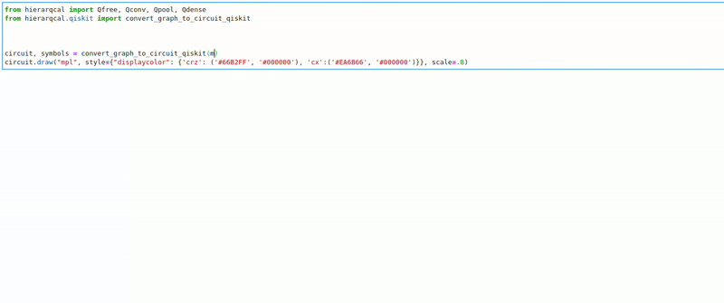

Because evolution is unitary.
HierarQcal - A quick and easy way to build or generate Quantum Convolutional Neural Networks
Matt Lourens
A typical quantum machine learning workflow consists of various components, each influencing the next to ultimately determine model performance. For example, if you want to build a quantum model for music genre classification, a pipeline might look something like this (from Lourens et al.):

Better models require better control over these components and a particularly important one is quantum circuit design. This is because it contributes largely to the expressivity, trainability, and computational complexity of your model. There are multiple levels to quantum circuit design, from the choice of combining individual quantum gates for different unitary operations, to the placement of these unitaries across the circuit. In the pipeline shown above, the circuit design is an instance of the Quantum Convolutional Neural Network (QCNN) which is a quantum circuit architecture inspired by Convolutional Neural Networks (CNNs). The main properties of QCNNs are:
- Convolutions: a layer of identical unitaries applied in a translationally invariant manner on available qubits.
- Pooling: a layer of measurements on a subset of qubits with rotations based on measurement outcomes applied to the remaining qubits.
- Weight sharing between unitaries in the same layer.
The result is a space of circuit architectures that tend to be more computationally feasible (due to the weight sharing and systematic reduction of system size) and that show promising classification performance (Cong et al., Grant et al., Lourens et al.). Two instances of this space are shown below:

Now while these circuits are easy to understand geometrically, i.e. the first “pools” half the available qubits from bottom to top and the second from inside out, their implementation can be cumbersome. This is because you have to loop through all qubits and keep track of indices that correspond to the correct architectural operations like convolutions or pooling. For example, if you have code for QCNN 1 and want to change it to QCNN 2, it ends up being an unnecessarily involved process even though they only differ in a small conceptual way. This is where HierarQcal comes in, it enables the design of quantum circuits in an intuitive way. In fact, the circuits shown above were generated with the following two lines of code:
Semantically QCNN 1 is 8 qubits (Qfree(8)) with a convolution of stride 1 (Qconv(1)) and pooling from bottom to top (Qpool("right")) repeated three times (⋅, ⋅)*3. As you can see the code resembles the verbal description of the architecture. It also captures the fact that the only difference between QCNN 1 and QCNN 2 is the pooling direction. This is the idea behind HierarQcal, to provide a way of capturing the design motifs of a quantum circuit in a hierarchical fashion. For example, the bottom-to-top QCNN above can be described with three levels of motifs:

The motifs on the first level we call primitives, the bottom-to-top QCNN has two: a convolution of stride 1 and pooling from bottom to top. One level up the hierarchy we create another motif that alternates between the two primitives, a convolution-pooling unit. The third level motif is three convolution-pooling units repeated. This final motif, which is one directed graph, contains the full QCNN architecture. You can check the paper (Lourens et al.) for the full theoretical framework, but basically, the effect of a primitive is based on its hyperparameters and the effect of its predecessor. This way, their individual and combined architectural effects are captured, enabling them to be dynamically stacked one after another to form second level l = 2 motifs. Stacking these stacks in different ways constitutes higher-level motifs until a final level l = L, where one motif constitutes the entire QCNN architecture.
This hierarchical view is particularly useful for architecture search, algorithms that automatically design model architectures (such as for the QCNN). The main idea is to use smaller operations as building blocks for larger ones which result in an expressive representation that mimics design elements typically performed by humans. In classical machine learning literature, the field of neural architecture search (NAS) explores architecture representations as part of automated neural network construction. In particular, hierarqcal was inspired by the hierarchical representation presented in this paper by Liu et al..

Speaking of inspiration, our logo comes from Dall E 2 presented with the following prompt: A robot building itself with artificial intelligence, pencil drawing
Which touches on the idea of a robot building another, in some way hierarqcal is the pencil that allows you or a robot to “draw” quantum circuits.
There’s a bunch of docs and tutorials that can get you started with building QCNNs or creating algorithms that generate them. Some useful things to mention are:
- The package is quantum computing framework agnostic, so you can use it with any framework (Qiskit, Cirq, Pennylane) or your own, as long as it’s in python. This is because the architecture representation is just a data structure and the package allows you to interact with it.
- It’s quick and easy to create a space of architectures which you can randomly sample to find a good-performing circuits for your specific problem/data. This is a nice way get baseline performance for your model. See this tutorial on how to do it.
- It’s open source! So if you have cool ideas for quantum circuit primitives, feel free to add them. So far we have Qconv, Qpool and Qdense, but there are many possibilities that can be explored based on symmetry, locality, etc.
In all examples so far we’ve used CRZ and CNOT gates for convolutions and pooling, but this is arbitrary, it’s easy to create a custom unitary which you pass to a primitive, for instance:

And here is a quick gif to highlight the design process:

That’s it for now, a big shout out to the unitary fund that made all of this possible! If you have any questions or comments, feel free to reach out to me on twitter MeMattLourens.
Useful Links: